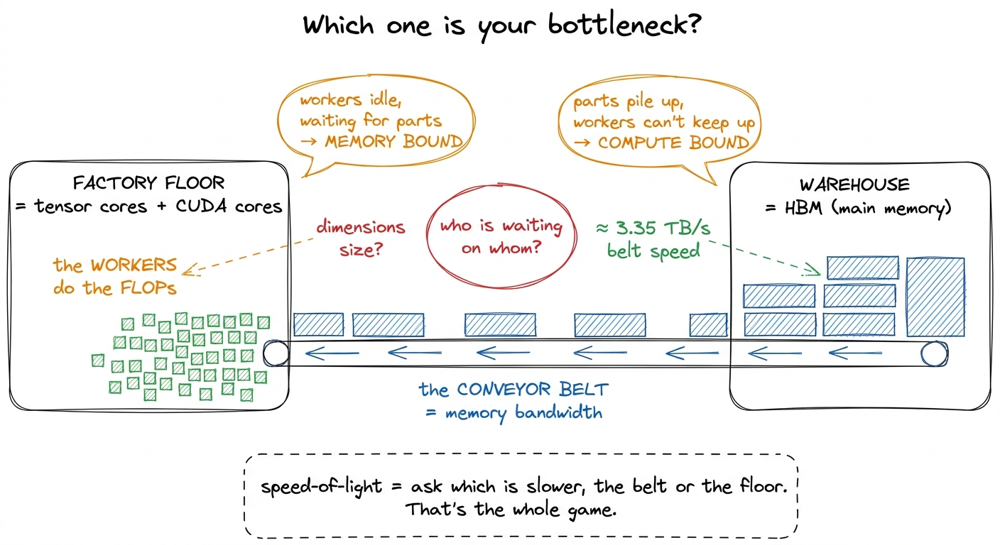
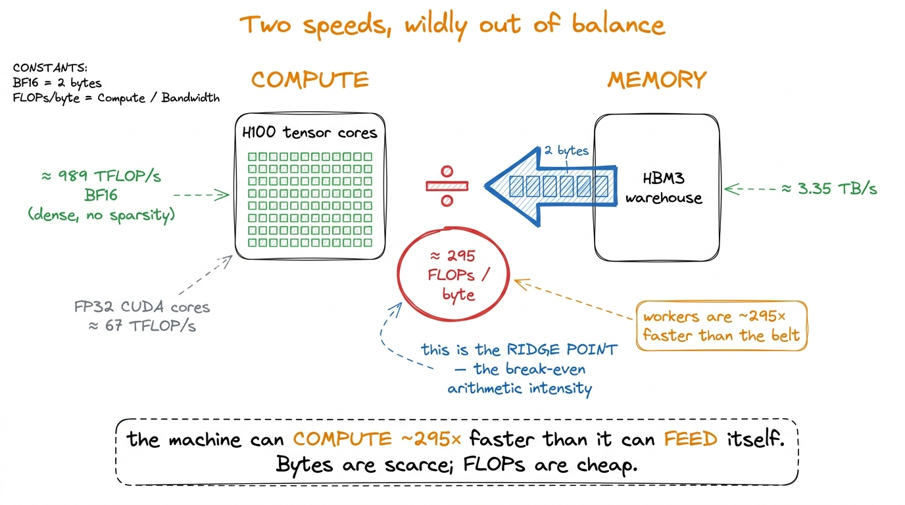
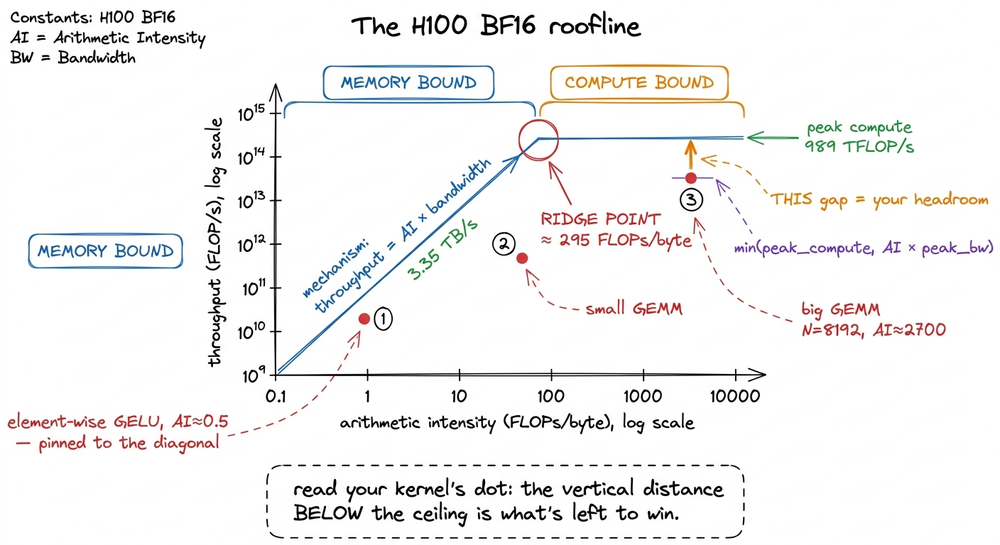
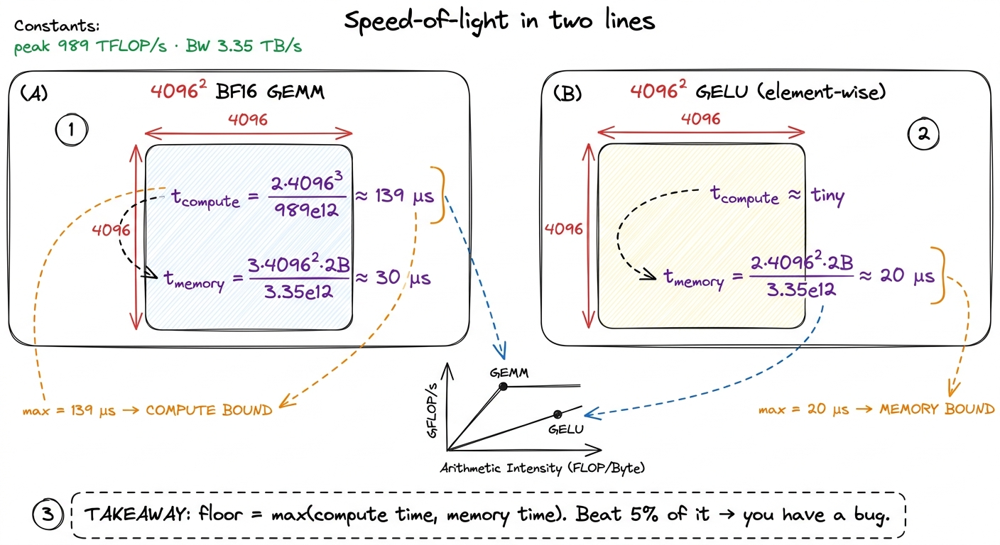
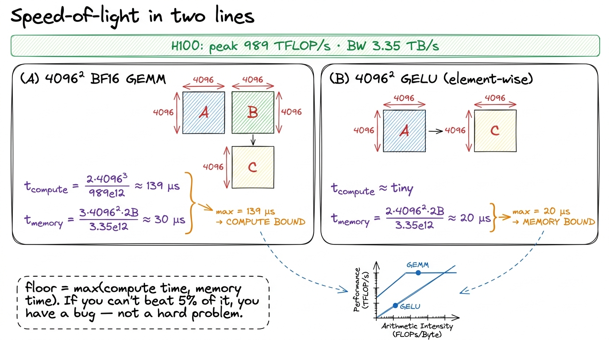
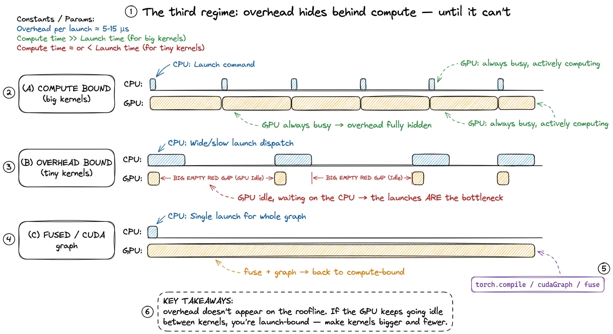
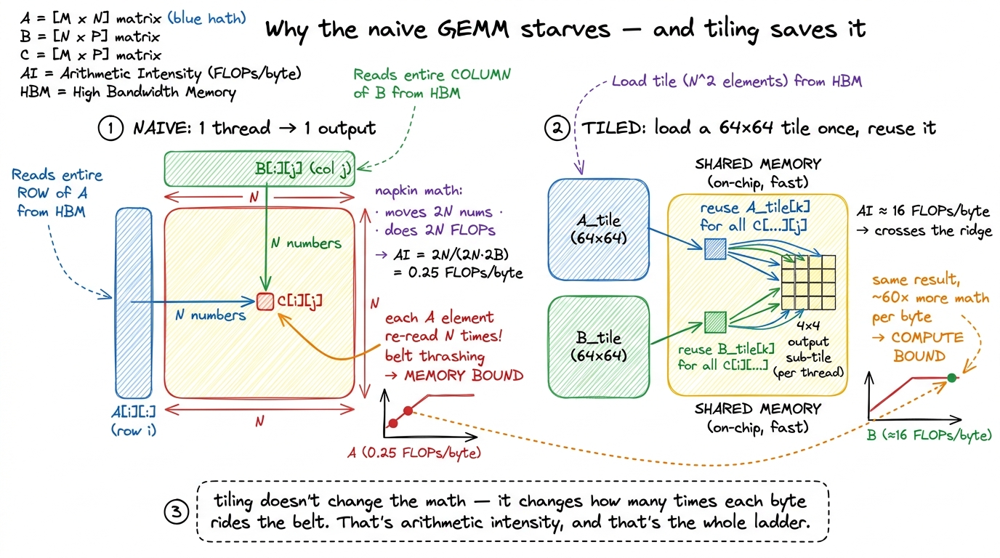

Speed-of-light thinking & the roofline ROOFLINE
Before I write a single line of a kernel, I want to know the fastest it could possibly run. Not a hope, not a vibe — an actual number, computed on the back of a napkin from two hardware constants and one property of the workload. If my best imaginable kernel tops out at 400 microseconds, and I profile my first attempt at 2 milliseconds, I know two things at once: there is 5× left on the table, and roughly where it is hiding. If the ceiling is 400 microseconds and I am already at 450, I should stop, close the profiler, and go do something more useful with my afternoon. There is nothing left to win.
This is the habit the whole rest of this site rests on: compute the speed-of-light limit first, before you optimize anything. It is the difference between optimizing with a map and optimizing by superstition. And the beautiful part is how little you need to know to do it. By the end of this article you will be able to look at any kernel — a matrix multiply, an activation, a normalization — and say, in two lines of arithmetic, "the fastest this can ever run is X microseconds, and it will be limited by this resource, not that one." You will do it before writing any code.
Let me build the whole thing from scratch. I will assume you know what a floating-point operation is (a multiply or an add on real numbers) and roughly what "memory bandwidth" means (how fast you can move bytes). That is genuinely all the background required. Everything else we will derive.
The three regimes article gave us the qualitative diagnostic: every kernel is bottlenecked by compute, by memory bandwidth, or by overhead. This article is the quantitative companion. It puts the actual numbers behind that framing, draws the one picture they live in — the roofline — and shows you how to read your regime off a plot before the kernel exists.1 The mental model here is lifted from Horace He's "Making Deep Learning Go Brrrr" and from Williams, Waterman & Patterson's original 2009 roofline paper. Both are worth reading in full. I have re-derived everything here for the H100 rather than the A100 those sources use, so the ridge point below (~295) is much larger than the ~13 you will see quoted for the A100.
The factory and the warehouse
Let me start with a picture, because the numbers only make sense once you can see the thing they describe.
Think of a GPU as a factory with a warehouse next door. The factory floor is where the arithmetic happens — the tensor cores and CUDA cores, thousands of tiny workers each doing multiplies and adds. The warehouse is the GPU's main memory, its High Bandwidth Memory (HBM), where all your data lives: the weights, the activations, the matrices. Between the factory and the warehouse runs a single conveyor belt, and that belt has a fixed speed. It can only carry so many bytes per second onto the factory floor.
Now here is the question that decides everything: which one is your bottleneck — the workers, or the belt?
If the workers are so fast that they finish every part the instant it arrives and then stand around waiting for the belt to bring more, you are memory-bound. Buying faster workers does nothing; the parts are not arriving fast enough. If instead the belt keeps dumping parts faster than the workers can process them, so that a pile of unprocessed material builds up on the floor, you are compute-bound. Now a wider belt does nothing; the workers are the wall.

figure rendering · The central mental model. A GPU is a fast factory fed by a fixed-speedHold onto this factory picture. Every formula in this article is just a precise version of "who is waiting on whom." We are going to put real numbers on the workers and on the belt, and the ratio between them will turn out to be the single most important constant in kernel engineering.
Two speeds, and only two
A GPU has exactly two throughputs that matter for the speed-of-light estimate. Just two. And the whole point is that they are wildly, almost comically, out of balance.
The first is peak compute — how many floating-point operations per second the arithmetic units can retire. This is the factory floor's capacity. On an H100 SXM5, the BF16 tensor cores do about 989 TFLOP/s in the realistic, sparsity-free regime.2 Marketing decks quote ~1979 TFLOP/s for the same chip, but that assumes 2:4 structured sparsity you almost never have in a dense GEMM. Use the dense number for honest estimates; whenever you see a headline FLOP number, ask whether it is a "with sparsity" number and halve it if so. To put 989 TFLOP/s in human terms: that is nearly a quadrillion multiply-adds every second. The ordinary CUDA-core FP32 path — the non-tensor-core workers — is an order of magnitude slower, around 67 TFLOP/s. The tensor cores are the only thing on this chip that hits a teraflop count worth bragging about, which is exactly why so much of kernel engineering is really "how do I keep the tensor cores fed."
The second speed is peak memory bandwidth — how many bytes per second you can pull from HBM onto the chip. This is the conveyor belt. The H100's HBM3 delivers about 3.35 TB/s. That sounds enormous — three and a third trillion bytes a second — until you hold it up against the compute number and divide.
So let us divide, slowly, because this one division is the heart of the article.
In BF16, every number is 2 bytes. So a belt that carries 3.35 TB/s carries about 3.35e12 / 2 = 1.68e12 numbers per second. That is how fast parts arrive on the factory floor. In that very same second, the tensor cores can perform 989e12 operations. Line those two up:
compute: 989e12 FLOPs per second (the workers)
memory: 1.68e12 numbers per second (the belt)
989e12 ÷ 1.68e12 ≈ 590 FLOPs per number that arrives
or 989e12 ÷ 3.35e12 ≈ 295 FLOPs per byte that arrivesRead that last number slowly, because it is genuinely surprising. For every single byte you drag across the belt, the factory floor can do roughly 295 floating-point operations in the time it takes that byte to arrive. Two hundred and ninety-five. The workers are almost three hundred times faster than the belt that feeds them.
When I first internalized this, it reframed everything. My instinct as a programmer was always to worry about doing less math. But on this hardware, math is nearly free and data movement is the scarce resource. If your kernel does fewer than 295 FLOPs for every byte it touches, the tensor cores finish early and sit idle, tapping their feet, waiting on the belt. You are memory-bound, and no faster math unit on earth can save you — because the math was never the problem.

figure rendering · The two hardware constants and the single ratio they produce. ComputeArithmetic intensity: the one number your kernel owns
We now have a property of the hardware: the belt is 295× slower than the floor. But whether your kernel is bottlenecked by the belt or the floor also depends on the kernel itself — specifically, on how much math it does per byte it moves.
That property has a name: arithmetic intensity (AI). It is the total FLOPs the kernel performs divided by the total bytes it moves between HBM and the chip.3 "Bytes moved" means DRAM traffic specifically — reads and writes to global memory (the warehouse). Data that stays resident in registers, shared memory, or L2 across the kernel does not count against AI, because it never rides the belt more than once. This is exactly why tiling and fusion raise arithmetic intensity: they convert would-be HBM round-trips into on-chip reuse.
arithmetic intensity = total FLOPs / total bytes moved to/from HBMArithmetic intensity is the one number your kernel owns. Peak compute and peak bandwidth belong to NVIDIA; you cannot change them. But AI is a property of your algorithm and your data-movement strategy, and it is the thing you spend your career pushing on. Compare it against the machine's break-even ratio — the 295 we just computed, which we will call the ridge point — and your entire fate is decided before you type a character:
- AI < ridge → memory-bound. The belt is the wall. Optimize movement.
- AI > ridge → compute-bound. The floor is the wall. Optimize the math units.
- AI ≈ ridge → balanced, and rare; you are threading a needle.
Let me make this concrete with two workloads you actually run every day, worked out by hand so no number falls from the sky.
Example one: an element-wise activation. Take a GELU over an N × N BF16 tensor. What does it move, and what does it compute? For each of the N² elements it reads one value in (2 bytes) and writes one value out (2 bytes), so 4 bytes of belt traffic per element. And it does a handful of FLOPs per element — a few multiplies, an add, a tanh-ish thing — call it under 10. So its arithmetic intensity is roughly 10 FLOPs / 4 bytes ≈ 2.5, and honestly for a plain activation it is closer to 0.5. Against a ridge of 295, that is somewhere between a hundred and six hundred times too low. This is not a close call. GELU is hopelessly, structurally memory-bound. The tensor cores are completely irrelevant to it; you will hit maybe one or two percent of peak FLOP/s while running at near-peak bandwidth, and — this is the part people find deflating — that is the best it can ever do. Running near-peak bandwidth is success for this kernel.4 This is the whole argument for kernel fusion. Chaining x.gelu().gelu() unfused reads and writes HBM four times; fused into one kernel, it reads once and writes once, halving the belt traffic and roughly doubling throughput for zero change in the math. Horace He's example is x.cos().cos(): 4 memory ops unfused, 2 fused, a clean 2× for free. The FLOPs were never the cost; the bytes were everything.
Example two: a big matrix multiply. Now take a large square GEMM, C = A · B, both N × N in BF16. How much math? A matrix multiply does 2N³ FLOPs — for each of the N² output elements, a dot product of length N, and each step of a dot product is one multiply plus one add, so 2N FLOPs per output, times N² outputs. How many bytes? In the best case you read the three matrices once: about 3N² elements, or 3N² · 2 bytes. Divide:
AI = 2N³ / (3N² · 2 bytes) = 2N³ / 6N² = N/3 FLOPs per byteLook at what happened. The arithmetic intensity grows with the matrix size. It is not a fixed small number like the activation's — it scales linearly with N. For N = 8192, that is 8192/3 ≈ 2700 FLOPs per byte, roughly nine times past the ridge. Big GEMMs are compute-bound, and dramatically so. This is not an accident of one workload; it is the deep reason matrix multiplication is the beating heart of deep learning. It is the one common operation whose arithmetic intensity climbs as you scale it, so it can actually saturate those absurdly fast tensor cores. It is the workload worth pouring silicon at, and it is exactly why the GEMM ladder on this site is a fair fight against cuBLAS.

figure rendering · Arithmetic intensity as the deciding ratio. GELU sits hundreds of timeNotice the orange arrow in that figure — the one dragging the GELU dot toward the ridge. That arrow is the entire craft of kernel engineering compressed into one gesture. Almost every optimization you will ever learn is a way of raising a kernel's arithmetic intensity by reusing data on-chip instead of dragging it across the belt again. Keep it in mind; we will return to it at the very end.
The roofline: putting the ceiling on the wall
We have a ridge point (a hardware fact) and an arithmetic intensity (a workload fact). Now let me put them on the same picture so you can see your regime instead of computing it in your head. This picture is called the roofline, and once you have it, you never lose it.
Put arithmetic intensity (FLOPs/byte) on the x-axis, log scale. Put achievable throughput (FLOP/s) on the y-axis, log scale. The question the plot answers is: given a kernel with this arithmetic intensity, what is the fastest it can possibly go?
The answer is the minimum of two limits, because you are always bounded by whichever resource runs out first — the belt or the floor:
achievable FLOP/s = min( peak_compute , AI × peak_bandwidth )Let me unpack why that formula is exactly the factory picture. The term AI × peak_bandwidth is your throughput if the belt is the bottleneck: bytes arrive at peak_bandwidth, and each byte is worth AI FLOPs, so the floor can only work at AI × peak_bandwidth FLOP/s no matter how fast it could go in principle. The term peak_compute is your throughput if the floor is the bottleneck: the workers max out and it does not matter how fast the belt runs. You get whichever is smaller. That is the min.
Now trace the shape. For low arithmetic intensity, AI × bandwidth is the smaller term, so the ceiling is a rising diagonal — a straight line whose slope is your memory bandwidth. Every kernel over here is belt-limited; the only way up the diagonal is to raise AI. For high arithmetic intensity, peak_compute is the smaller term, so the ceiling is a flat horizontal roof at 989 TFLOP/s. Kernels over here are floor-limited; more AI buys nothing, because you have hit the ceiling of the silicon and the belt has slack to spare.
The two lines meet at exactly one place: the ridge point, whose x-coordinate is peak_compute / peak_bandwidth ≈ 295. That corner is the only spot on the entire plot where you are simultaneously saturating both the belt and the floor — the theoretical sweet spot, where nothing is idle.

figure rendering · The roofline. A kernel's arithmetic intensity fixes which ceiling it lReading this plot is a two-step move, and it is worth doing slowly the first few times.
Step one: find your kernel's x-position from its arithmetic intensity. That alone tells you which ceiling you are under. Left of the ridge? Diagonal, memory-bound. Right of the ridge? Flat roof, compute-bound. You now know, before measuring anything, what kind of problem you have.
Step two: plot your measured throughput as a dot, and look straight up at the vertical distance to the ceiling above it. That gap is your remaining headroom. A dot sitting right on the ceiling is at speed-of-light for its regime — you are done, go home. A dot a factor of ten below the ceiling has a factor of ten left to win, and — this is the magic — the roofline has already told you where that win lives. Under the diagonal, the win is in moving bytes better (coalescing, fusion, bigger tiles). Under the roof, the win is in feeding the math units better (more parallelism, better instruction mix, tensor-core utilization). The plot converts "my kernel is slow" into "my kernel is slow for this specific reason," which is the entire difference between engineering and flailing.
From ceiling to wall-clock: the napkin estimate
Here is the payoff, and it is the thing I actually use every single day. The roofline gives you a rate — a FLOP/s ceiling. But what you really want before writing a kernel is a time: the fastest it could conceivably run, in microseconds, so you have a target to beat and a way to know when to stop.
Getting there is one more small step. A rate times a volume gives a time. You have the workload's volume — its total FLOPs and its total bytes. So compute two candidate times: how long the compute must take if it ran at peak, and how long the memory movement must take if it ran at peak. Then take the larger of the two. Why the larger and not the sum? Because in the best case the belt and the floor run at the same time — while the workers chew on the parts already delivered, the belt is delivering the next batch. They overlap. So the kernel cannot finish before the slower of the two finishes, but it also need not wait for both in series. The floor is max(compute time, memory time).
def speed_of_light_us(flops, bytes_moved,
peak_flops=989e12, peak_bw=3.35e12):
t_compute = flops / peak_flops # seconds if the floor is the wall
t_memory = bytes_moved / peak_bw # seconds if the belt is the wall
return max(t_compute, t_memory) * 1e6 # microseconds — whichever winsLet me run it by hand on our two examples so you see there is no magic in the code.
The 4096 × 4096 BF16 GEMM. FLOPs: 2 · 4096³ ≈ 1.37e11. Bytes: 3 · 4096² · 2 ≈ 1.0e8. Now the two times. Compute: 1.37e11 / 989e12 ≈ 139 µs. Memory: 1.0e8 / 3.35e12 ≈ 30 µs. The max is 139 µs — the compute time dominates, which is another way of saying this GEMM is compute-bound (its AI of 4096/3 ≈ 1365 sits well right of the ridge). No honest kernel beats 139 µs on this hardware. That is the wall.
The 4096 × 4096 GELU. Its math is trivial, so t_compute is negligible. Its bytes are 2 · 4096² · 2 ≈ 6.7e7 (read in, write out). Memory time: 6.7e7 / 3.35e12 ≈ 20 µs. The max is 20 µs, set entirely by the byte count, because the activation is hopelessly memory-bound. Two lines of arithmetic, and you have a hard target for each kernel before writing a single line of CUDA.

figure rendering · The whole discipline on a napkin. Compute both candidate times, take tThat is the entire discipline. Two hardware constants, one workload ratio, one max. It gives you your regime, your ceiling, and your remaining headroom before you have compiled anything — and it turns every profiling session from a fishing trip into a checklist. I cannot overstate how much calmer optimization becomes once you always know the number you are aiming at.
A word on the third regime: overhead
I have been speaking as if there were only two possible bottlenecks, the belt and the floor. There is a third, and it is the one that catches people off guard because it does not show up anywhere on the roofline: overhead. This is time the GPU spends not computing and not moving data, but waiting on the host — the Python interpreter, the framework dispatch, the cost of launching a kernel at all.
Why does this matter for speed-of-light thinking? Because your beautiful 20 µs GELU floor is meaningless if launching the kernel costs 10 µs of CPU-side overhead every time. The numbers here are sobering. Plain Python manages on the order of 32 million operations per second; even a fast framework like PyTorch dispatches only a few hundred thousand kernels per second.5 Horace He's figures: Python ~32M ops/s, PyTorch eager dispatch ~280K ops/s. Meanwhile an A100 could execute ~9.75 million FLOPs in the time Python does one interpreter operation. The saving grace is that frameworks launch kernels asynchronously — the CPU races ahead queuing the next kernel while the GPU chews on the current one, so overhead hides behind compute as long as the GPU stays busy. So for tiny kernels — small batch decode, little element-wise ops — you can be overhead-bound: the GPU finishes in microseconds and then sits idle waiting for the CPU to hand it the next job. This is precisely the regime that CUDA graphs, torch.compile, and kernel fusion attack, and it is why real inference stacks like vLLM work so hard to launch fewer, bigger kernels.

figure rendering · The overhead regime as a timeline. When kernels are large the CPU's laOverhead is a whole topic of its own — kernel launch anatomy and streams and async go deep on it. For speed-of-light purposes, just remember: the max(compute, memory) floor is the GPU's best case. If your measured time is far above the floor and the GPU profiler shows it going idle between launches, your bottleneck is not on the roofline at all — it is on the host.
Zooming in: one output element, one belt trip
Let me zoom all the way in, from the whole matrix down to a single thread, because this is where the roofline stops being an abstraction and becomes a thing you can feel in the code. It also shows, on a napkin, exactly why the naive GEMM kernel is doomed — and how tiling rescues it.
Consider the most naive possible matrix-multiply kernel: one thread computes one output element C[i][j]. To do that, the thread reads row i of A (that is N numbers) and column j of B (another N numbers), multiplies them pairwise, and sums. So it moves 2N numbers from HBM and does 2N FLOPs. Its arithmetic intensity is 2N / (2N · 2 bytes) = 0.5 / 2 = 0.25 FLOPs per byte.6 This matches Damek Davis' worked A100 example exactly: one output element per thread gives AI ≈ 0.25 FLOPs/byte, and even a 2×2 tile per thread only reaches ≈ 0.5 — both far below even the A100's modest ridge of ~13, let alone the H100's ~295. Tiling is not a nice-to-have; without it the GEMM is stranded in the memory-bound basin.
Sit with that. An arithmetic intensity of 0.25 against a ridge of 295 means the naive GEMM does one one-thousandth of the math-per-byte it needs to keep the tensor cores busy. It is dragging every element of A and every element of B across the belt over and over — element A[i][k] gets re-read from HBM for every one of the N outputs in row i. The workers are starving. The kernel is a big GEMM, which belongs way up on the compute roof, but this implementation has pinned its dot to the far-left diagonal, in the memory-bound basin, wasting the one workload on the chip that could actually saturate it.
The fix is shared memory tiling, and the roofline predicts exactly how much it helps. Instead of each thread fetching its own row and column from HBM, a block of threads cooperatively loads a 64 × 64 tile of A and a tile of B into fast on-chip shared memory once, then every thread in the block reuses those loaded values many times before touching HBM again. Reuse is the belt-trips-saved. With a 64 × 64 tile where each thread computes a 4 × 4 sub-tile, the arithmetic intensity jumps to roughly 16 FLOPs per byte — which, on the A100 Damek analyzes, is finally above its ridge of 13, tipping the kernel from memory-bound to compute-bound. Same math, same result, but the dot has walked right across the ridge because you stopped re-reading the warehouse.

figure rendering · The zoom-in that makes it click. The naive kernel re-reads every elemeThat last figure is the whole site in miniature. Every optimization in the GEMM ladder is another way of saying "load it once, reuse it more" — which is another way of saying "raise the arithmetic intensity" — which is another way of saying "walk the dot rightward across the ridge and then up toward the roof."
Where this points next
Let me tie the whole thing back to the worklogs that follow, because speed-of-light thinking is not a one-time calculation — it is the opening move of every single one of them.
The naive GEMM kernel on this site reaches a humiliating 1.3% of cuBLAS. The roofline explains why instantly, and now you can see it without me telling you: that kernel re-reads every element of A and B from HBM for each output (exactly the AI ≈ 0.25 we just derived), pinning its dot to the far-left diagonal — the memory-bound basin — even though the underlying workload, a big GEMM, belongs up on the compute roof. The kernel is fighting in the wrong regime entirely.
The entire optimization ladder that follows is, geometrically, one motion: drag the dot to the right and up the diagonal until it hits the roof, then climb the roof toward cuBLAS. Coalescing, tiling in shared memory, register blocking, vectorized float4 loads, warptiling — each one raises arithmetic intensity by converting an HBM round-trip into on-chip reuse, walking us from 1.3% through 8.5%, 12.8%, 36.5%, 68.7%, and eventually 93.7% of cuBLAS. Not one of those steps is a guess. Each is the roofline handing us the next move: measure the dot, see the gap, ask whether we are under the diagonal or the roof, close the gap accordingly.
That is speed-of-light thinking. Two constants, one ratio, one max, and a single picture you never put down. From here on, every worklog on this site starts the same way — computing the ceiling before touching the keyboard — because the fastest way to make a kernel fast is to know, before you begin, exactly how fast "fast" is.